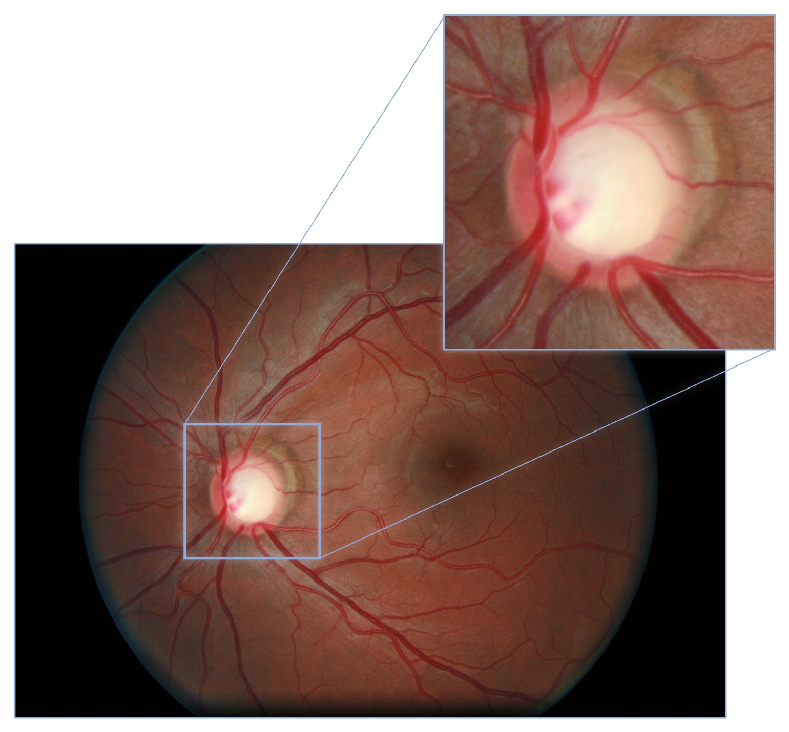
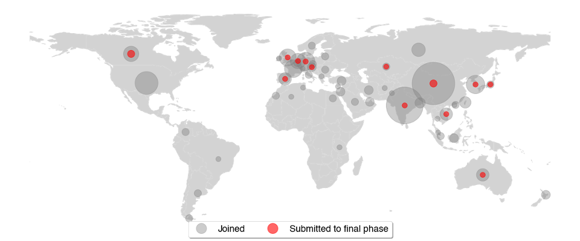
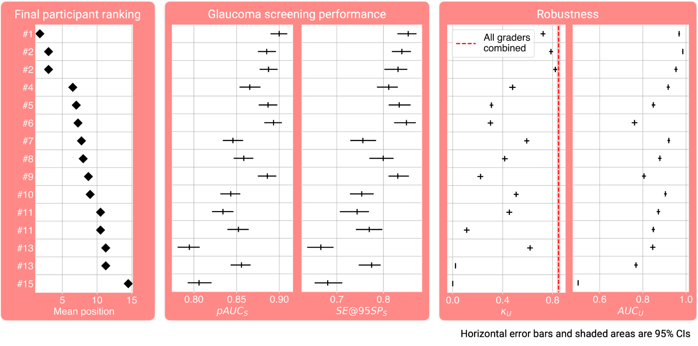
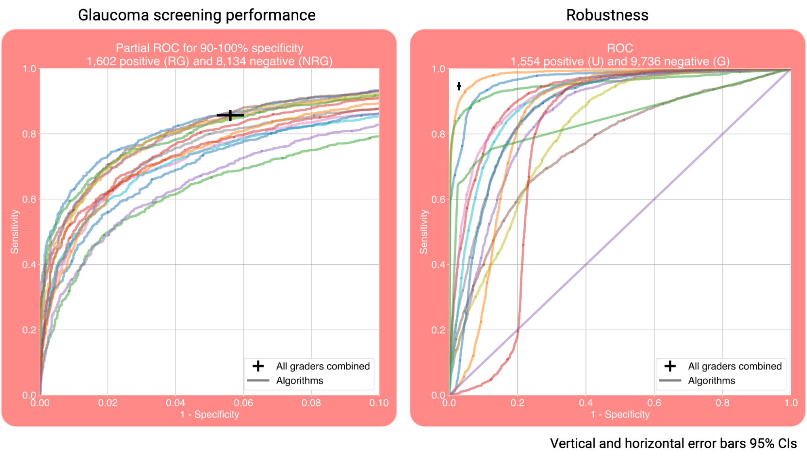
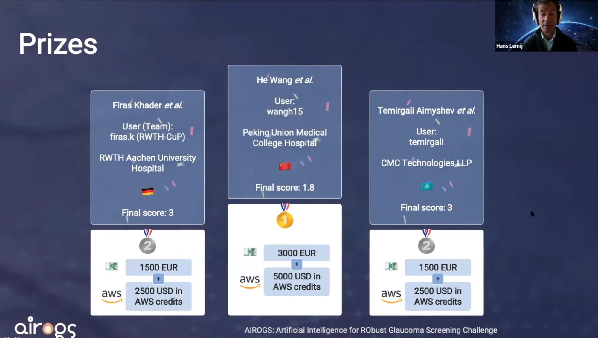

We recently presented the results of our challenge “AIROGS: Artificial Intelligence for RObust Glaucoma Screening” at ISBI 2022. Participating teams presented their artificial intelligence (AI) solutions for robust glaucoma screening on which they had been working for the past four months. In this blog post, we present the rationale behind the challenge, give an overview of the results and describe our experiences with the Type 2 challenge features that were recently introduced on grand-challenge.org.
Glaucoma and screening
Glaucoma is a leading cause of irreversible blindness and impaired vision, estimated to affect up to 110 million people in 2040. Population studies showed that over 50% of glaucoma cases are undiagnosed. Moreover, a main cause of blindness is late detection, since the disease can be controlled well when it is diagnosed early on using treatments such as medication, laser and surgery.
Glaucomatous patients can be identified with the use of color fundus photography (CFP). See an example CFP image with the optic disc magnified, below. The analysis of CFP images performed by human experts, however, is a highly costly procedure. AI could increase the cost-effectiveness of glaucoma screening, by reducing the need for this manual labor. Moreover, if automated AI based solutions that can forward glaucomatous patients to ophthalmologists would be integrated in scanners (or even better: smartphone cameras), they could be used at eye shops and opticians without the need for an expert to be present at the site.

From at-the-lab performance to real-world scenarios
Testing AI screening solutions in real-world settings is highly important, as illustrated in this news article, based on this evaluation study. They described observations when deploying an AI model for diabetic retinopathy screening from CFP images in clinics in Thailand.
"It gives guaranteed results, but it has some limitations. Some images are blurry, and I can still read it, but [the system] can’t."
- A participant of the evaluation study who worked with the AI screening tool.
"It’s good but I think it’s not as accurate. If [the eye] is a little obscured, it can’t grade it."
- Another participant of the evaluation study who worked with the AI screening tool.
As illustrated by these quotes, the AI quality check was too strict in the opinion of the camera operators and ophthalmic nurses, causing frustration. Moreover, image quality varied highly across locations, settings and operator experience level. So, in real-world settings, different types of image quality can be expected, depending on where and by whom an image is taken.
Therefore, algorithms should be able to tell when it can grade an image or not, even when it has not seen a certain type of ungradability during training. However, it should also not be unnecessarily strict.
A heterogeneous, multi-center dataset without ungradable training data
For the AIROGS challenge, we used a large screening dataset of around 113,000 images from about 60,000 patients and approximately 500 different sites with a heterogeneous ethnicity. We splitted the data in a training set with about 101,000 gradable images (from referable and non-referable glaucomatous eyes) and a closed test set with approximately 11,000 (both gradable and ungradable) images. To encourage the development of methodologies with inherent robustness mechanisms, we did not include ungradable data in the training data, while we did include ungradable data in the test set and evaluated the ability of solutions to distinguish gradable from ungradable images. Furthermore, glaucoma screening performance was assessed by considering the detection performance of referable glaucoma in gradable data.
Labeling was performed by a pool of carefully selected graders. From a larger group of general ophthalmologists, glaucoma specialists, residents in ophthalmology and optometrists who had been trained at optic disc assessment for detecting glaucoma, 89 indicated that they wanted to become a grader for labeling the data set. They were invited for an exam and 32 of them passed with a minimum specificity of 92% and a minimum sensitivity of 85% for detecting glaucoma on fundus photographs.
For each image they were presented with, graders needed to state whether the eye should be referred (referable glaucoma: RG), should not be referred (no referable glaucoma: NRG) or that the image could not be graded (ungradable: U). To ensure a high-quality set of labels, each image was initially graded twice. If the graders agreed, the agreed-on label was the final label. If the graders disagreed, the image was graded by a third grader (one of two experienced glaucoma specialists); that label was the final label. About 2% of all graded images were eventually labeled as ungradable.
Outcomes
We were happy to see that people from all over the world joined the AIROGS challenge. 351 participants from 51 countries joined the challenge and 15 teams from 13 countries eventually submitted a solution for the final leaderboard. The world map below depicts for each country how many users joined and submitted to the final leaderboard. Each circle indicates a country and the circle’s size portrays the number of participants from that country.

Participants were evaluated on two aspects: glaucoma screening performance and robustness. Glaucoma screening performance was measured by the partial area under the receiver operator characteristic curve at 90-100% specificity (pAUCₛ) and the sensitivity at 95% specificity (SE@95SPₛ). We quantified robustness using Cohen's kappa score, i.e. the agreement between the reference and the decisions provided by the challenge participants on image gradability (κᵤ), and the area under the receiver operator characteristic curve with the human reference for ungradability as labels and ungradability scalar values provided by the participants, as the target scores (AUCᵤ). A final score, defined as the mean of these four metrics, subsequently determined the final participant ranking.
The best pAUCₛ, SE@95SPₛ, κᵤ and AUCᵤ were 0.90, 85%, 0.82 and 0.99, respectively. The four metrics for each participant, along with the final score on the left, are shown here:

The receiver operator characteristic curves (ROCs) for glaucoma screening performance and robustness are shown below. The sensitivity and specificity of the graders are plotted as well, showing that the screening performance of the teams was on par with the one of human graders.

The winning teams recevied a cash prize and AWS compute credits:

What worked?
Based on the method descriptions provided by the team participants, it stood out that a few methodological choices were made predominantly by top performing teams.
Glaucoma screening performance
All teams in the top 3 used a vision transformer for referable glaucoma classification, while apart from them, only one other participant did. Furthermore, all prize winners manually labeled the optic disc to train an optic disc segmentation or detection algorithm and used it to crop input images as a pre-processing step. That was only done by two other participants.
Robustness
The three winners also all in some way used the confidence of this optic disc detection or segmentation algorithm for ungradabillity detection.
The team that scored the highest AUCᵤ manually labeled the most optic discs, and their ungradability detection approach also included a separate classifier. This classifier was trained to separate gradable images from images that were "more on the side of ungradability" and the training samples were picked manually by selecting “images that seemed most affected by blurring or low-quality depiction of the optic disc”. The second best AUCᵤ approach also included the confidence of a vessel segmentation approach.
The three best performing teams in terms of AUCᵤ that did not require manual annotations, were ranked 4th, 5th and 6th in terms of AUCᵤ. These 4th and 6th ranked teams both used test-time augmentation for ungradability detection. The robustness approach from the 5th ranked team used the reconstruction error of an autoencoder trained on gradable data, weighted by a factor based on their RG classification model that is “highest [...] when the probability is 0.5, which [means the model is] unable to predict, and is lowest when the probability is certain, which is either 0 or 1.”
Type 2 challenges
AIROGS was one of the first so-called “Type 2” challenges on grand-challenge.org. In such a challenge, participants submit an algorithm, rather than a file with their predictions on the test set, as is done in a Type 1 challenge. These algorithms are submitted in the form of a Docker container. The grand-challenge.org platform runs these algorithms on the private test set, which has a number of advantages. Firstly, this makes manual manipulation of the test set impossible, reducing the possibility of cheating. Secondly, it greatly improves reproducibility.
For Type 1 challenge type, reproducibility was not always guaranteed. Top performing solutions were often not available, or available in a repository that was hard or impossible to get working. For our challenge, participants needed to upload an algorithm that can operate fully automatically and autonomously (internet access is not available when running these algorithms). Therefore, it is guaranteed that each submitted solution has working code behind it. With the single click of a button, AIROGS participants can now open up their solutions for others to use since they already have a working algorithm on grand-challenge.org. A few examples of public AIROGS solutions are already provided by Densen Puthussery et al., Jónathan Heras et al. and Abdul Qayyum et al. We can now upload new images to these algorithms for further testing by requesting access and clicking the  button or the API. Or if you don’t have any test data at hand, we can view these algorithms’ results on some publicly available images that were already uploaded before by going to the algorithms’
button or the API. Or if you don’t have any test data at hand, we can view these algorithms’ results on some publicly available images that were already uploaded before by going to the algorithms’  pages.
pages.
Final words
We just reopened the challenge for new submissions. So, although the prizes have already been rewarded, you can still join the challenge and submit your own solutions here.
You can also already try out some solutions from participants who made their code and Grand Challenge algorithms publicly available here.
If you would like to see more results, hear more details about the challenge or the learn more about the methods used by the participants, read their method descriptions or watch the AIROGS event at ISBI 2022 here:
In conclusion, we presented a challenge based on real-world data for glaucoma screening by CFP. The results are promising, as the teams’ performances were high and many teams exceeded our target of an 80% sensitivity at 95% specificity. We hope the results of this challenge help toward implementing robust AI for glaucoma screening in clinical practice.
 Google Scholar
Google Scholar
 GitHub
GitHub